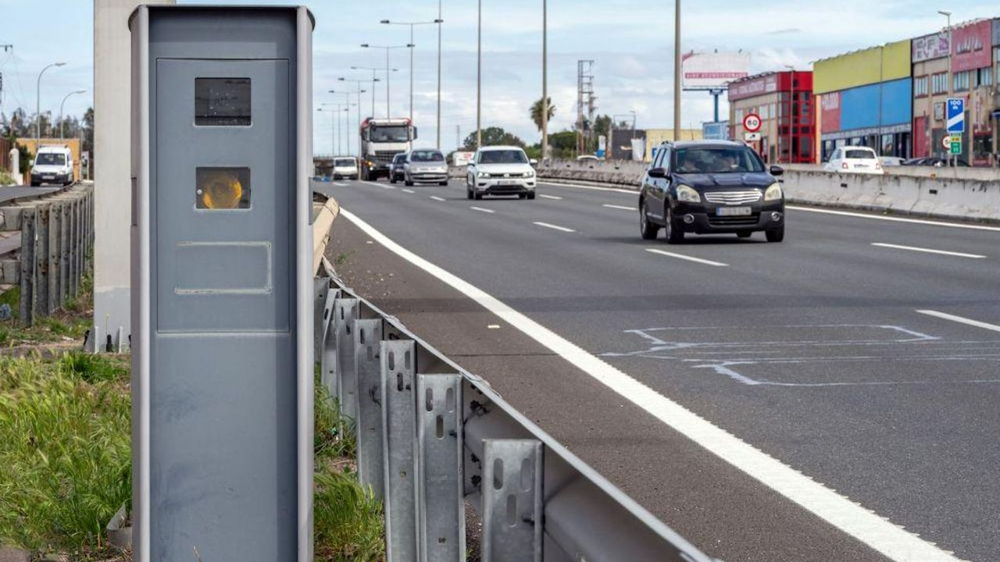
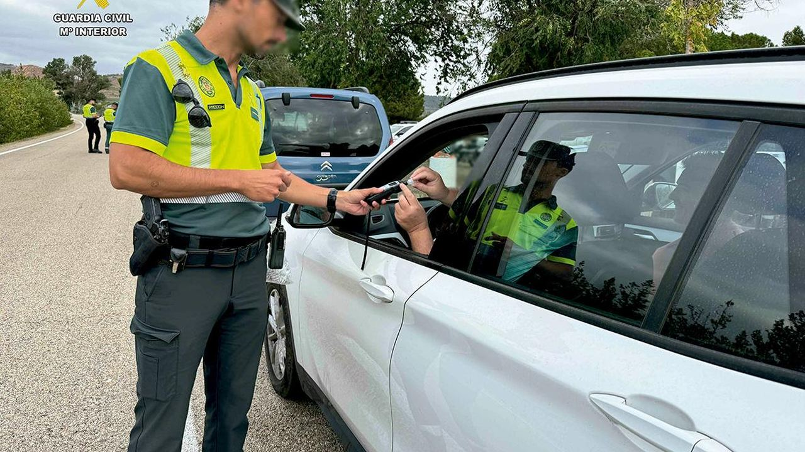
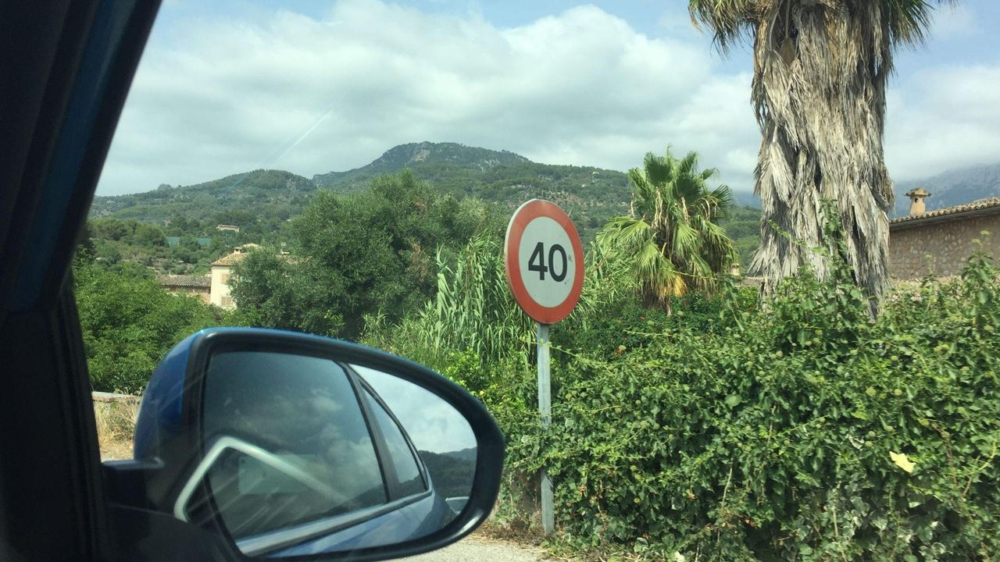
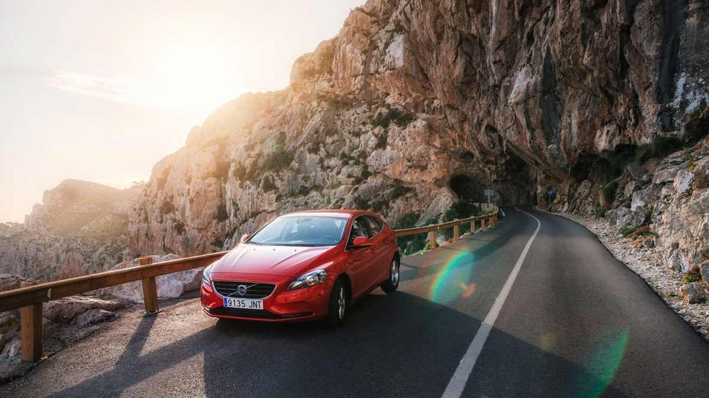
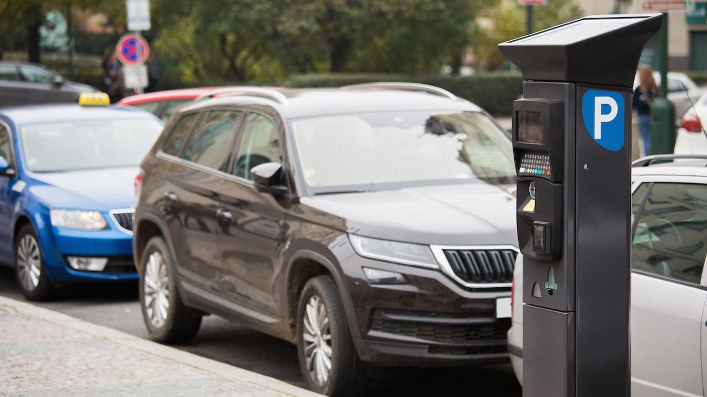

Leben in Spanien · Praktisches
Bußgelder in Spanien – was sie kosten und wie Sie weniger zahlen
 Von Aleksandra Kobus · · aktualisiert · 4 Min. Lesezeit
Von Aleksandra Kobus · · aktualisiert · 4 Min. Lesezeit

Kurz gesagt: Die meisten schweren Verkehrsverstöße kosten in Spanien 200 €, etwa Handy in der Hand, fehlender Gurt oder eine rote Ampel. Alkohol am Steuer kostet 500 € oder 1.000 €. Geschwindigkeitsverstöße kosten 100 € bis 600 €. Bußgelder erreichen Sie auch im Mietwagen oder im deutschen Auto, und wer innerhalb von 20 Tagen zahlt, bekommt 50 % Rabatt, verzichtet aber auf den Einspruch.
Ein Bußgeld in Spanien bekommt man überraschend schnell. Ein Blick aufs Handy, ein paar km/h zu schnell auf leerer Straße oder ein falsch geparktes Auto reichen. Hier erfahren Sie, was die häufigsten Verstöße kosten, wie kontrolliert wird und wie Sie weniger zahlen.
Warum so viele Fahrer überrascht werden

Kontrollen laufen in Spanien weitgehend automatisch. Feste und mobile Blitzer, Abschnittskontrollen, Ampelkameras und Umweltzonen in größeren Städten erfassen Verstöße, ohne dass ein Polizist Sie anhält. Die Verkehrsbehörde DGT setzt zudem Hubschrauber, Drohnen und Zivilfahrzeuge ein.
Viele Fahrer erfahren deshalb erst Wochen später von einem Bußgeld, per Post, per E-Mail vom Autovermieter oder über das elektronische Postfach der DGT.
Die häufigsten Bußgelder

Die Beträge legt das nationale Verkehrsgesetz fest. Schwere Verstöße kosten zusätzlich Punkte.
| Verstoß | Bußgeld | Punkte |
|---|---|---|
| Handy in der Hand beim Fahren | 200 € | 6 |
| Kein Gurt oder kein Kindersitz | 200 € | 4 |
| Rote Ampel oder Stoppschild missachtet | 200 € | 4 |
| Überholen, wo es verboten ist | 200 € | 4 |
| Zu schnell gefahren | 100–600 € | 0–6 |
| Alkohol über dem Grenzwert | 500 € oder 1.000 € | 4 oder 6 |
| Fahren ohne Versicherung | 601–3.005 € | – |
| Parkverstöße (je nach Gemeinde) | meist 80–200 € | – |
Jede nicht angeschnallte Person im Auto zählt, und für Mitfahrer unter 18 haftet der Fahrer. Die Punkte gelten für den spanischen Führerschein; mit einem deutschen Führerschein werden sie auf einem Punktekonto in Spanien geführt und können zu einem Fahrverbot in Spanien führen.
Tempolimits und Geschwindigkeitsverstöße

Die allgemeinen Limits sind:
- 120 km/h auf Autobahnen (autopistas und autovías),
- 90 km/h auf anderen Straßen,
- innerorts 50 km/h auf Straßen mit zwei oder mehr Spuren je Richtung, 30 km/h auf Straßen mit einer Spur je Richtung und 20 km/h auf Straßen, in denen Gehweg und Fahrbahn auf gleicher Höhe liegen.
Die Höhe des Bußgelds hängt davon ab, wie viel zu schnell Sie waren. Bis 20 km/h zu schnell bei Tempo 50 oder bis 30 km/h zu schnell auf der Autobahn kosten 100 € und keine Punkte. Höhere Überschreitungen kosten 300 € bis 600 € und 2 bis 6 Punkte. Mehr als 60 km/h zu schnell innerorts oder mehr als 80 km/h außerorts ist eine Straftat.
Alkohol und Drogen
Der Grenzwert liegt bei 0,5 Promille im Blut (0,25 mg/l Atemluft), wie in Deutschland. Für Fahrer mit weniger als zwei Jahren Erfahrung und Berufsfahrer gilt 0,3 Promille (0,15 mg/l Atemluft).
- Über dem Grenzwert: 500 € und 4 Punkte.
- Mehr als doppelt so viel oder Wiederholung innerhalb eines Jahres: 1.000 € und 6 Punkte.
- Über 1,2 Promille (0,60 mg/l Atemluft) ist eine Straftat, mit Geldstrafe, gemeinnütziger Arbeit oder Haft und Führerscheinentzug.
Fahren unter Drogeneinfluss kostet 1.000 € und 6 Punkte. Wer einen Test verweigert, begeht eine Straftat.
Mietwagen und Autos mit deutschem Kennzeichen

Werden Sie im Mietwagen erfasst, geht das Bußgeld zuerst an den Vermieter. Er gibt Ihre Daten an die Behörden weiter, die Ihnen den Bescheid schicken, oft Wochen später. Die meisten Vermieter belasten Ihre Karte zusätzlich mit einer Bearbeitungsgebühr.
Auch mit dem eigenen Auto aus Deutschland, Österreich oder der Schweiz erreicht Sie ein Bußgeld zu Hause. Die EU-Staaten tauschen Halterdaten für die wichtigsten Verkehrsverstöße aus, etwa Raserei, Alkohol, fehlenden Gurt und Handy am Steuer. Bußgelder ab 70 € können zudem in Deutschland vollstreckt werden.
Wer keinen Wohnsitz in Spanien hat und von der Polizei angehalten wird, muss in der Regel sofort zahlen, mit 50 % Rabatt. Kann man nicht zahlen, darf das Auto festgehalten werden.
So zahlen Sie mit 50 % Rabatt

Die meisten Bußgelder halbieren sich, wenn Sie innerhalb von 20 Kalendertagen nach Zustellung zahlen. Mit dem Rabatt erkennen Sie den Verstoß an und können keinen Einspruch mehr einlegen, die Punkte werden trotzdem abgezogen.
Bezahlen können Sie:
- online auf der Website der DGT oder in der App miDGT,
- bei einer Bank oder der Post mit dem Bescheid,
- in einem Büro der DGT.
Bußgelder fürs Parken und andere städtische Verstöße zahlen Sie an das Rathaus, meist online. Wenn Sie ein spanisches Auto besitzen oder in Spanien wohnen, melden Sie sich beim elektronischen Postfach der DGT (DEV) an, damit Sie Bescheide schnell erhalten und den Rabatt nicht verpassen.
Häufige Fragen
Wie hoch ist ein Bußgeld für zu schnelles Fahren in Spanien?
Von 100 € für eine leichte Überschreitung bis 600 € in den schwersten Fällen, mit bis zu 6 Punkten. Mehr als 60 km/h zu schnell innerorts oder 80 km/h außerorts ist eine Straftat.
Kommt ein spanisches Bußgeld nach Deutschland?
Ja. Die EU-Staaten tauschen Halterdaten für Raserei, Alkohol, Gurt- und Handyverstöße aus, und Bußgelder ab 70 € können in Deutschland vollstreckt werden.
Wie bekomme ich 50 % Rabatt?
Zahlen Sie innerhalb von 20 Kalendertagen nach Zustellung. Sie verzichten damit auf den Einspruch, Punkte werden trotzdem abgezogen.
Welche Promillegrenze gilt in Spanien?
0,5 Promille im Blut oder 0,25 mg/l Atemluft. Für Fahranfänger (unter zwei Jahren) und Berufsfahrer 0,3 Promille, also 0,15 mg/l Atemluft.
Entspannt unterwegs
Spaniens Straßen sind gut und die Küste lässt sich herrlich befahren. Lassen Sie das Handy liegen, achten Sie innerorts auf das Tempo und prüfen Sie, wo Sie parken dürfen, dann werden Bußgelder selten ein Thema. Wenn Sie nach Spanien ziehen oder ein Ferienhaus kaufen, fragen Sie uns nach dem Alltag vor Ort, von der Ummeldung des Autos bis zum spanischen Führerschein.
Quellen: Ley sobre Tráfico, RDL 6/2015 (BOE) · DGT – pay a fine